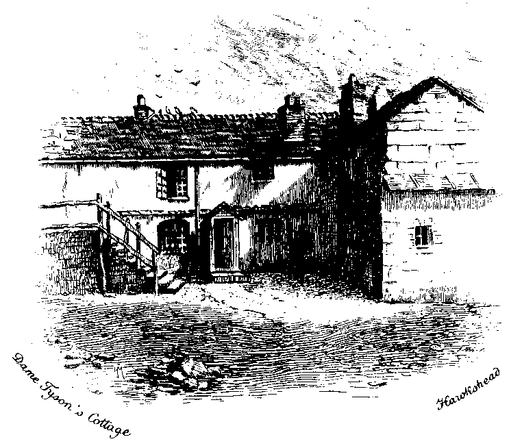

Wordsworth's
Poetical Works
volume 2
edited by
William Knight
1896
Table of Contents
This page prepared by Clytie Siddall, a volunteer member of Distributed Proofreaders.
I enjoy volunteer proofreading, and you might, too!
Anybody, from anywhere, from any language background, can contribute to putting thousands more free books online, by checking just one page at a time.
Interested? Check out Distributed Proofreaders, a non-profit, volunteer site where hundreds of people like you and me add up to a great team, helping Project Gutenberg make a hundred thousand books of all kinds available free, anywhere in the world, just one page at a time...